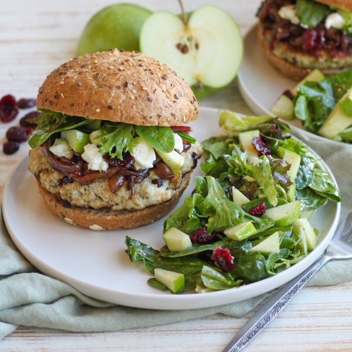

Turkey Cranberry Burger with Onion, Goat Cheese & Mixed Greens

Prep Time
35 min
Nutrition (per serving)
694.1 kcalCalories
46.6 gProtein
56.1 gCarbs
33 gFat
Full nutrition table
| Calories | 694.1 kcal |
| Total fat | 33 g |
| Saturated fat | 9.7 g |
| Trans fat | 0.8 g |
| Cholesterol | 130.4 mg |
| Sodium | 490.2 mg |
| Carbohydrates | 56.1 g |
| Fiber | 7.9 g |
| Sugars | 28.8 g |
| Protein | 46.6 g |
| Potassium | 805.4 mg |
| Calcium | 168.1 mg |
| Iron | 5.2 mg |
| Vitamin A | 191.6 IU |
| Vitamin C | 10.5 mg |
| Vitamin D | 28.1 IU |
Cookware
Ingredients
- ½ cupdried cranberries
- 1 (4 oz) loggoat cheese
- 2Granny Smith apples
- 1 ½ lbground turkey
- 1 mediumred onion
- 1 (5 oz) pkgspring mix (mixed greens)
- 4whole grain buns or rolls
- apple cider vinegar
- black pepper
- Dijon mustard
- extra virgin olive oil
- honey
- Italian seasoning
- panko bread crumbs
- red wine vinegar
- sage, dried
- salt
- Worcestershire sauce
Steps
- Preheat a medium saucepan over medium heat.
- While the pan heats up, peel, halve, and slice onion crosswise into thin half-moons.1 medium red onion
- Once the pan is hot, add oil and swirl to coat the bottom. Add onion and salt; cook, stirring occasionally, until onion is soft and caramelized, 15-20 minutes.1 tbsp extra virgin olive oil
½ tsp salt - Meanwhile, roughly chop cranberries and place in a medium bowl.¼ cup dried cranberries
- Add turkey, bread crumbs, and spices to the bowl with the cranberries. Mix with your hands until well combined. Form the turkey mixture into 4 equal-sized patties and place on a plate.1 ½ lb ground turkey
½ cup panko bread crumbs
2 tsp sage, dried
2 tsp Italian seasoning
1 tsp salt
¼ tsp black pepper - Preheat a grill pan, outdoor grill, or regular skillet over medium-high heat.
- Once the pan is hot, coat with oil. Add burger patties and cook, undisturbed, for 5 minutes; flip patties and cook an additional 5-7 minutes, until cooked through. Once done, transfer to a clean plate.1 tbsp extra virgin olive oil
- Meanwhile, place vinegar, oil, honey, Dijon, salt, and pepper in a clean medium bowl. Whisk to combine the dressing.2 tbsp apple cider vinegar
4 tsp extra virgin olive oil
2 tsp honey
2 tsp Dijon mustard
¼ tsp salt
¼ tsp black pepper - Wash, dry, quarter, and core apples; small dice. Add to the bowl with the dressing.2 Granny Smith apples
- Wash and dry the mixed greens (skip this step if they came pre-washed). Add to the bowl, along with additional cranberries, and toss to combine the salad. Set aside.1 (5 oz) pkg spring mix (mixed greens)
¼ cup dried cranberries - When the onions are done, add vinegar and Worcestershire to the pan, then stir to combine. Remove from heat.4 tsp red wine vinegar
1 tsp Worcestershire sauce - Toast buns if desired.4 whole grain buns or rolls
- Crumble goat cheese into a small bowl.1 (4 oz) log goat cheese
- Place bottom half of each bun on a plate; layer with burger patties, onions, goat cheese, and a small portion of the salad. Close with the top half of each bun and serve with remaining salad on the side. Enjoy!